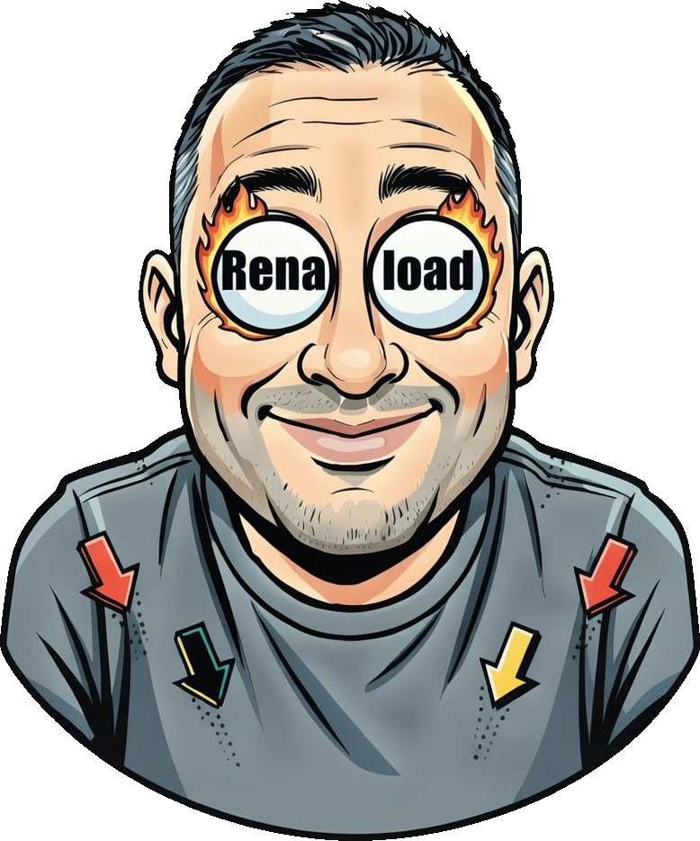

Qualidade de verdade
Até 4K, com o áudio oficial da faixa em vez do áudio do videoclipe. Vídeo em H.264, pronto para entrar no editor.
Aplicativo para Windows que baixa e converte conteúdos próprios, autorizados ou de livre distribuição — áudio ou vídeo, um link por vez ou uma lista inteira. E acompanha o desempenho dos perfis que são seus.
Estamos finalizando o cadastro da loja. Fale no WhatsApp para reservar a sua licença.

YouTube · YouTube Music · Instagram · TikTok · Facebook · Spotify · Deezer
Até 4K, com o áudio oficial da faixa em vez do áudio do videoclipe. Vídeo em H.264, pronto para entrar no editor.
MP3, M4A ou WAV sem compressão — com artista, título e capa já gravados dentro do arquivo.
Cole vários nomes de uma vez e baixe a lista inteira em lote, com o nome de arquivo que você escreveu.
Baixe a legenda em .srt junto com o vídeo e, quando precisar, salve só o trecho que interessa.
Entre no YouTube e no Instagram pela janela do próprio app quando um conteúdo exigir sessão.
Cole o link de uma playlist do YouTube e baixe a lista toda, na ordem, sem repetir link por link.
Escolha quantos downloads correm ao mesmo tempo e limite a velocidade para não travar a sua internet.
O app se atualiza sozinho para acompanhar as mudanças das plataformas.
Acompanhe os seus perfis do Instagram e do TikTok: quanto cada publicação rendeu, como isso evoluiu mês a mês e o que o público está de fato comentando. A coleta e a leitura acontecem no seu computador — nada é enviado para servidor nenhum.
O Renaload é uma ferramenta para baixar conteúdo seu, conteúdo autorizado pelo titular dos direitos, material livre de direitos ou em domínio público, e conteúdo cujo download seja permitido pela própria plataforma.
Ele não contorna bloqueio, proteção nem cobrança de nenhum serviço, e não deve ser usado com essa finalidade. Verificar se você tem o direito de baixar determinado conteúdo é responsabilidade de quem usa.
São 10 downloads gratuitos. Depois disso, a ativação é feita com um token enviado pelo suporte e vale para o computador onde foi ativada.
Falar no WhatsAppJá comprou? Recupere o seu token de ativação.